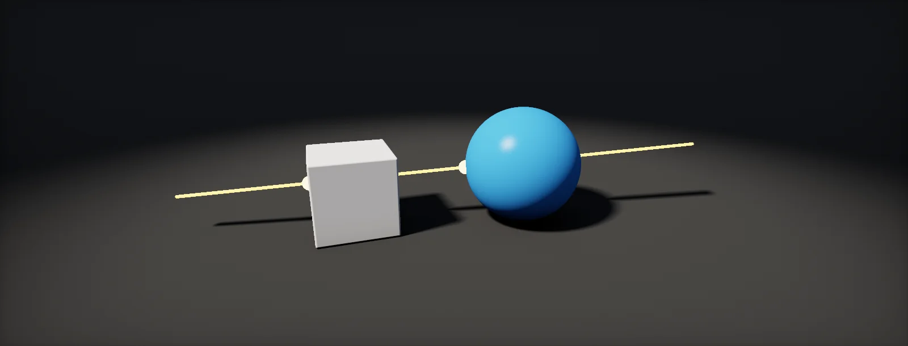

Ray Intersections
Sky shaders, interior mapping, volumetric clouds and ray tracers all ask one question: where does this ray hit that shape? This unit answers it for planes, spheres and boxes, one step at a time.

Ray equation
A is a half-line: a start point and a direction. Shaders describe it with one small formula. Start at the origin O, walk a distance t along the direction D, and you are at the point P(t):
O and D are vectors; t is a single number. If D is normalized, t is exactly the distance travelled in world units, which is why ray code normalizes its directions. Negative t gives points behind the start.
Every "does this ray hit that shape" question becomes: for which t is P(t) on the shape? The rest of this unit answers it for a plane, a sphere and a box.
Ray–plane intersection
Start with the easiest shape: a horizontal floor at height h. A point is on the floor when its y equals h. The y part of P(t) is Oy + t·Dy, so set it equal to h and solve for t:
Three cases fall out of the formula. Dy = 0: the ray runs parallel to the floor and never hits it (division by zero). t < 0: the floor is behind the start, also no hit. t > 0: a hit at distance t. For a plane in any orientation the same steps give t = (d − dot(O, n)) / dot(D, n), with n the plane's normal and d its distance from the origin (dot product as projection).
Ray–sphere equation
A point is on a sphere with centre C and radius r when its distance to C equals r. Squaring both sides avoids the root (the trick from Vectors: Length): dot(P − C, P − C) = r².
Put the ray into it. Write L = O − C, the start relative to the centre, so P(t) − C = L + t·D. Expanding the dot product of that with itself, and using dot(D, D) = 1 for a normalized D, gives a in t:
- dot(L + tD, L + tD) = r²
- dot(L, L) + 2t·dot(L, D) + t²·dot(D, D) = r²
- t² + 2·b·t + c = 0, with b = dot(L, D) and c = dot(L, L) − r²
The left side is a parabola in t. The ray hits the sphere exactly where the parabola crosses zero. Move the ray and watch the parabola move with it:
Solving the quadratic
The quadratic t² + 2bt + c = 0 has the solutions t = −b ± √(b² − c). The part under the root, the h = b² − c, decides everything: negative means no real solution, the ray misses; zero means it just grazes; positive gives two hits, where the ray enters (t0, with minus) and leaves (t1, with plus).
// returns (t0, t1), or (-1, -1) for a miss. rd must be normalized. float2 RaySphere(float3 ro, float3 rd, float3 center, float radius) { float3 L = ro - center; float b = dot(L, rd); float c = dot(L, L) - radius * radius; float h = b * b - c; // discriminant if (h < 0) return float2(-1, -1); h = sqrt(h); return float2(-b - h, -b + h); // entry, exit }
Choosing t
The formula always returns two values, even when one or both are behind the start. Which one to use depends on where the ray starts:
- Outside, in front: both positive. t0 is the entry, t1 the exit.
- Inside (c < 0): t0 is negative, behind you. The only real hit ahead is t1, the exit.
- Behind you: both negative. No hit ahead.
Slide the start point along the ray through the sphere and watch the signs flip:
A camera standing on a planet is inside the atmosphere sphere, so a sky shader always needs this case analysis. It is covered in Full-Screen Ray Setup.
Ray–box slab test
An axis-aligned box is the region between two planes on each axis, a "slab" per axis. On each axis, the plane formula gives when the ray enters and leaves that slab. The ray is inside the box only while it is inside all slabs at once, so:
- it enters the box at the latest of the slab entries;
- it leaves at the earliest of the slab exits;
- it hits only if that entry comes before that exit.
The slab test is the heart of interior mapping, of bounding-volume tests in ray tracers, and of ray-marched volumes that first clip the ray to their bounding box.
Build it in Unity HDRP
A sphere traced inside a cube is the smallest useful ray tracer: the cube gives the pixels, the shader decides whether the ray through each pixel hits a perfect sphere. The same functions are used later for clouds and interior mapping. Written for Unity 6 with HDRP 17; Unity 2022 LTS works the same apart from a few renamed menu entries.
- Create the graph: in the Project window, Create > Shader Graph > HDRP > Unlit Shader Graph. Open it and check the Graph Inspector > Graph Settings, and tick Alpha Clipping.
- Ray origin: a Position node in
Absolute Worldspace (the point on the cube). Ray direction: a View Direction node (World, normalized), negated, because it points from the surface toward the camera. - Sphere centre: a Transform node converting the Vector 3 (0, 0, 0) from
ObjecttoAbsolute World(TypePosition). Radius: a Float property (0.5 fits a default cube). - Save
RayShapes.hlsl. In the graph, add a Custom Function node. Set Type toFile, Source toRayShapes.hlsland Name toSphereHit(without the_floatsuffix). Add the inputs Origin (Vector 3), Dir (Vector 3), Center (Vector 3), Radius (Float) and the outputs Hit (Float), T (Float), Normal (Vector 3), in that order and with those types: they must match the function's parameters. - Connect Hit to Alpha with an Alpha Clip Threshold of 0.5, and shade with the normal:
Normal × 0.5 + 0.5as a colour, or the lighting function from Dot and Cross Product. - For the box, use
BoxHitfrom the same file with the ray in the object's space (Transform nodeAbsolute World → Objectfor origin and direction).
#ifndef ATLAS_RAY_SHAPES_INCLUDED
#define ATLAS_RAY_SHAPES_INCLUDED
// Ray P(t) = Origin + t * Dir against a sphere. Dir must be normalized.
void SphereHit_float(float3 Origin, float3 Dir, float3 Center, float Radius,
out float Hit, out float T, out float3 Normal)
{
float3 L = Origin - Center;
float b = dot(L, Dir);
float c = dot(L, L) - Radius * Radius;
float h = b * b - c; // the discriminant
Hit = 0; T = -1; Normal = float3(0, 1, 0);
if (h < 0) return; // the ray misses
h = sqrt(h);
float t0 = -b - h, t1 = -b + h;
T = t0 > 0 ? t0 : t1; // outside: t0; inside: t1
if (T < 0) return; // the sphere is behind the ray
Hit = 1;
Normal = normalize(Origin + T * Dir - Center);
}
// Slab test against an axis-aligned box of half-size Extents centred at the origin (object space).
void BoxHit_float(float3 Origin, float3 Dir, float3 Extents,
out float Hit, out float TNear, out float TFar)
{
float3 inv = 1.0 / Dir;
float3 t1 = (-Extents - Origin) * inv;
float3 t2 = ( Extents - Origin) * inv;
float3 tmin = min(t1, t2), tmax = max(t1, t2);
TNear = max(max(tmin.x, tmin.y), tmin.z);
TFar = min(min(tmax.x, tmax.y), tmax.z);
Hit = (TNear < TFar && TFar > 0) ? 1 : 0;
}
#endifThe cube still writes its own depth, not the sphere's, so other objects intersect it as a cube. Writing the traced depth needs a Depth Offset output (HDRP Lit graphs have one under Graph Settings > Depth Offset), the same tool pixel depth offset uses.
Identical, with Position in World space.
Same maths in a Custom node; origin from Absolute World Position, direction from -Camera Vector, centre from Object Position. Use the Masked blend mode with Opacity Mask = Hit.
Sources and further reading
The formulas and engine details in this unit come from these references. Engine documentation changes between versions.
- ArticleIntersectorsInigo QuilezCompact ray–sphere, ray–box and many other intersection functions.
- BookRay Tracing in One WeekendPeter Shirley et al.The quadratic for spheres, derived and used in a full ray tracer.
- ArticleFast, branchless ray/bounding box intersectionsTavian BarnesThe slab test and its edge cases.